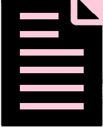
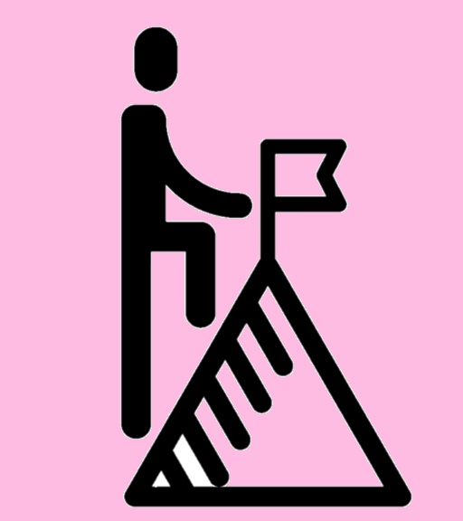
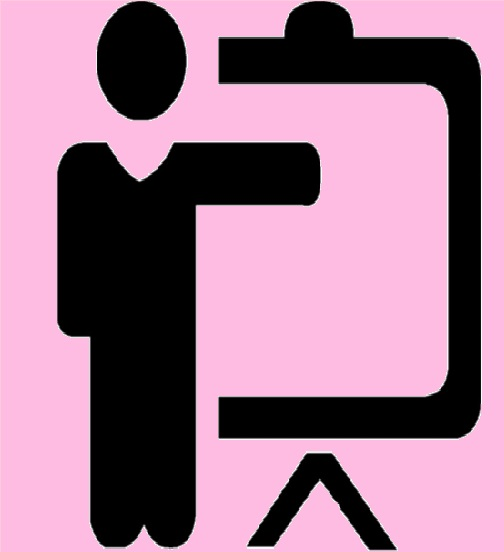

I am Emilio Ruiz Betanzos and am from Mexico, I am 16 years old and I am studying the upper secondary level in
bivalent modality.I am someone curious, eager to learn and innovate with the use of new technologies; with rapid
learning capacitythrough sight. I have a sense of healthy competition and leadership and in the same way of
teamwork and initiative within a job or project.
PERSONAL INFORMATION

TARGET

Successfully complete the upper middle level along with a technical career in programming. Subsequently, have work
experiences while completing the higher level within a computer systems career with some specialization within the
same field such as cyber security or data science. Aspiring to a high position within a Software company. In the
same way, having my own projects within my hobbies such as welding or video game programming or my specialization.
All my academic life has been within Mexico. Basic level: Rafael Molina Betancourt Primary School, satisfactorily accredited,
generation 2011 - 2017. Technical High School No.32 "Science and Technology" satisfactorily accredited in the 2017 - 2020
generation, with a technical career in Machines, Tools and Control Systems. The upper middle level of 6 semesters at the Center
for Scientific Studies and Technological Studies No.9 "Juan de Dios Batiz" studying the 4 semester in the 2020 - 2023 generation
of the same within the technical career in Programming.
SCHOLARSHIP

COURSES

Courses about robotics and programming within the Robotix robotics school, taking the Maker Elemental and Maker basic
levels from 2015 - 2017, as well as participation in the Robotix fire programming competition. Apart from this, I have
taken the participation of summer courses of social participation and science of the Alameda Art Museum in the years
2014.Kumon math course since 2018, consisting of 15 levels, starting at 4 to date level 14.
At the basic level, diplomas in the first, second, third, fourth, fifth and sixth years are distinguished by an average
of 9.6. As well as the participation in the Olympics of knowledge of the zone obtaining the fourteenth place of 15 places.
Diploma in the first, second and third year of high school for an exemplary average of 9.5. Apart from an English command
endorsed by Oxford of 56% without expiration. At the upper secondary level for participation in the 2021 Interpolytechnic
academic meetings in Analytical Geometry and Geometry and Trigonometry.Of the courses, the diploma for completing the Kumon
J level of differential calculus in 2019.
DIPLOMAS
.jpg)